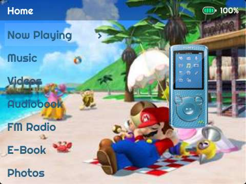

Super Mario Sunshine

Téléchargez le thème Super Mario Sunshine pour Innioasis Y1 par u/Angel-50000 et personnalisez l'apparence de votre joueur avec des ressources d'interface utilisateur sélectionnées.

Téléchargez le thème Super Mario Sunshine pour Innioasis Y1 par u/Angel-50000 et personnalisez l'apparence de votre joueur avec des ressources d'interface utilisateur sélectionnées.